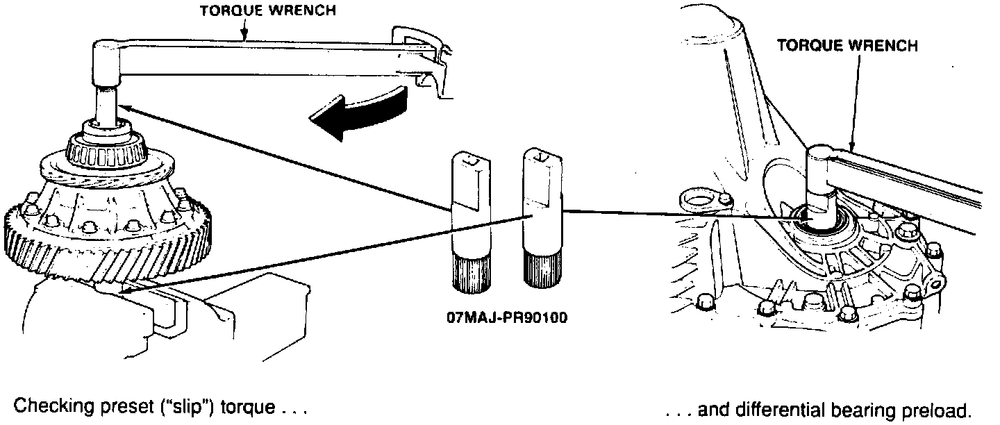

Inspect. Tool For Differential Clutch Discs (T/N 07MAJ-PR90100)

This tool is available from American Honda but it will not be automatically shipped to dealers. It's used for checking the condition ("slip" torque) of the clutch discs in an NSX differential on the bench. (Checking a differential in the car requires only a torque wrench and socket.) It's also used to hold the differential in a vise, and to check bearing preload after differential-related repairs. If you think you'll need it, order through your Parts Department. How to use the tool is shown in the Service Manual on pages 15-4, 6, 11, and 13.